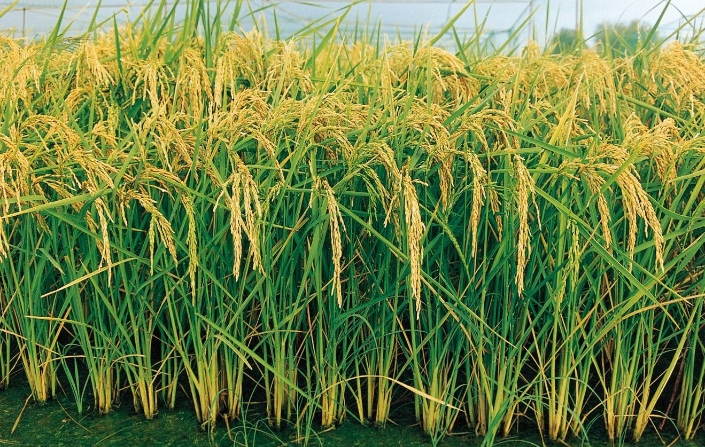
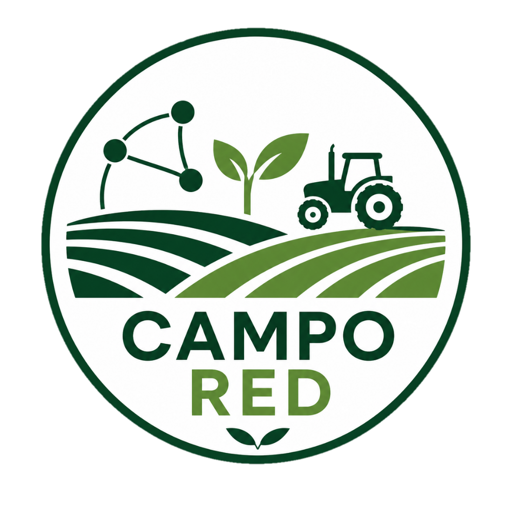
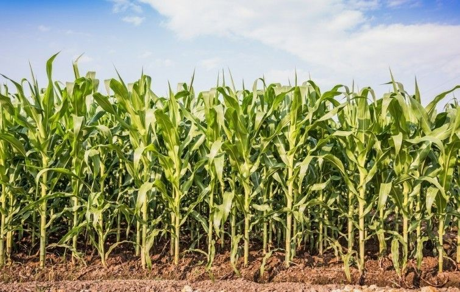
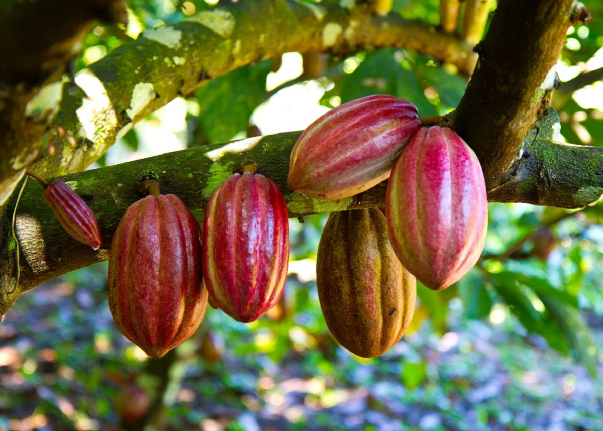
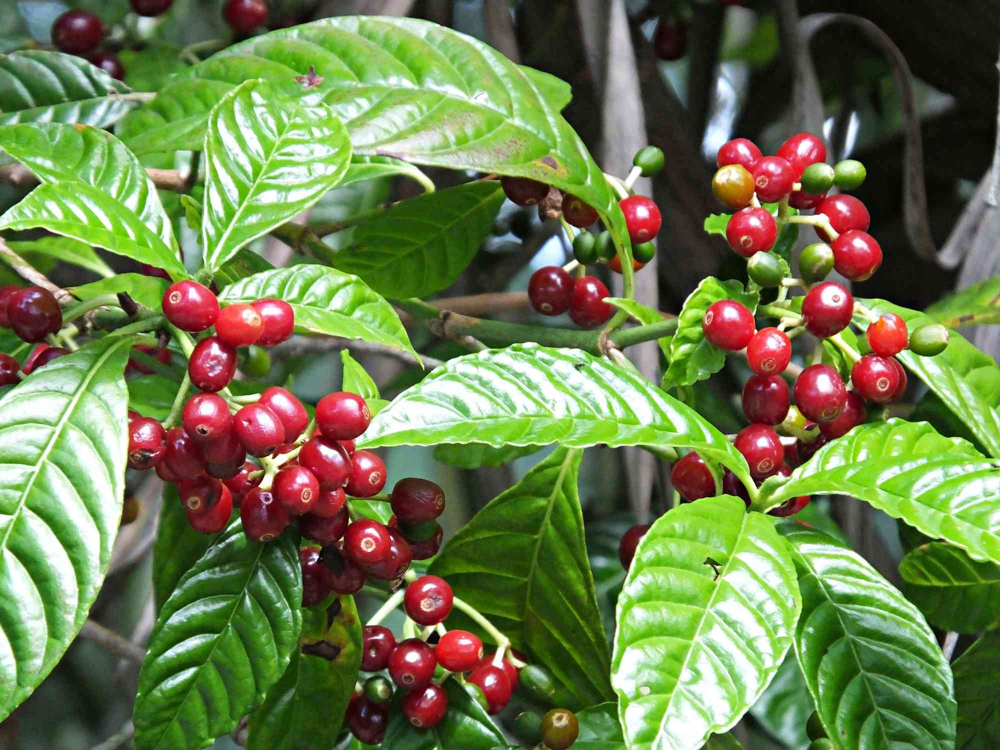
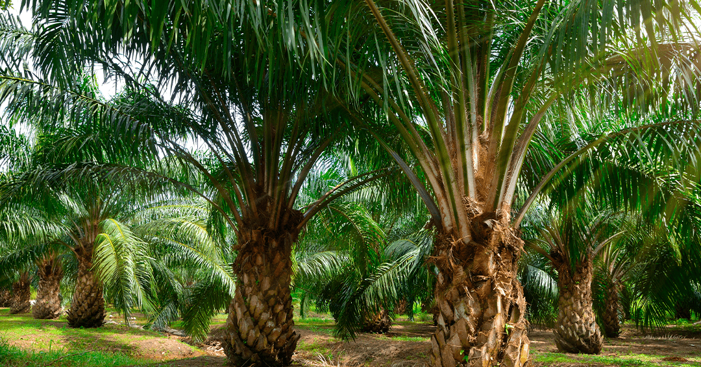
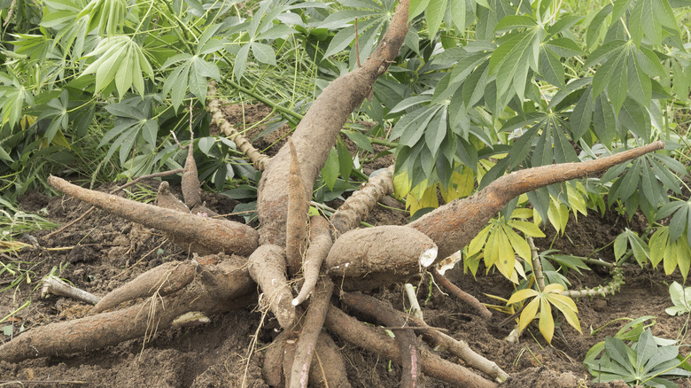
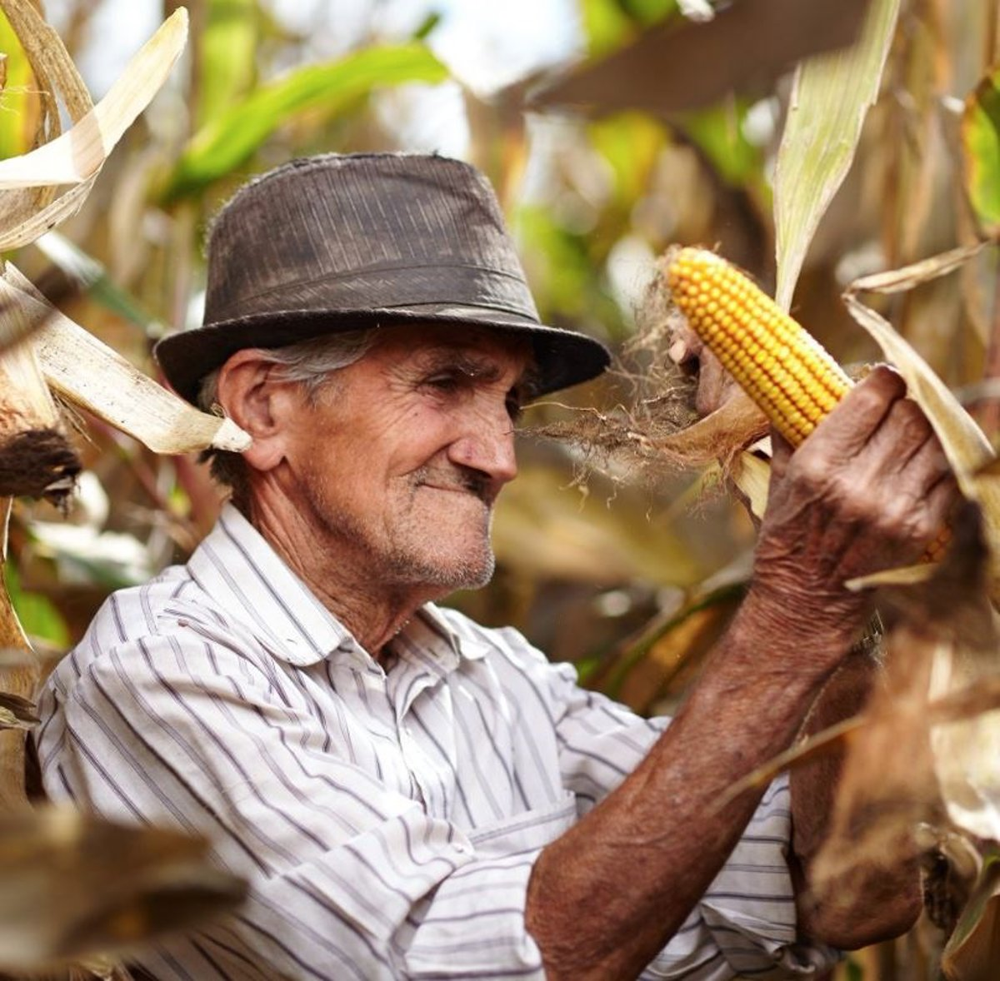

Arroz
2.4K PostsGestión de inundación, control de malezas y fertilización nitrogenada.

Consulta guías expertas, identifica plagas y comparte conocimientos sobre los pilares de nuestra tierra.

Gestión de inundación, control de malezas y fertilización nitrogenada.

Control del gusano cogollero y optimización de densidad de siembra.

Manejo de Monilia, injertos y fermentación para calidad premium.

Prevención de roya, cosecha selectiva y secado en patios.

Manejo de PC, nutrición del cogollo y fertilización por ciclos.

Selección de semilla, control de trips y cosecha mecanizada.

Especialista en Arroz
⭐ 4.9
Experto en Café
⭐ 5.0Patóloga del Cacao
⭐ 4.8